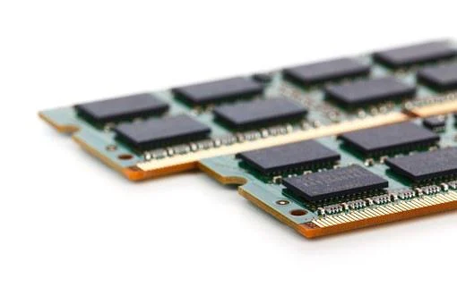

¿Qué es la memoria RAM? Es una memoria fugaz y de rápido acceso en la que se apoyan la mayoría de procesos.
No hay mucho que destacar en ella, aún así, es importante elegir bien la cantidad entre otras cosas. Por ello, vamos a trabajar este concepto para saber todo lo que debes saber a cerca de las RAM.
Cantidad: Básicamente, es casi la única característica que nos importa. En los ordenadores en que ya viene puesta, es importante fijarse en la cantidad. En primer lugar, cabe destacar que en algunos sistemas operativos, como Windows 11, existe una cantidad mínima, en este caso, 4GB de RAM. Si buscamos un ordenador mediano, nos deberíamos ir al rango de los 12GB. Si lo buscamos muy potente, 16GB debería ser lo mínimo.
Si buscamos ponérsela nosotros a un ordenador que no tiene, debemos 1º asegurarnos que la marca sea compatible con la placa base, y segundo, pensar que no necesitamos una tira de 16GB, sino que suelen meterse 2 de 8GB o 4 de 4GB, lo cual abarata el coste.